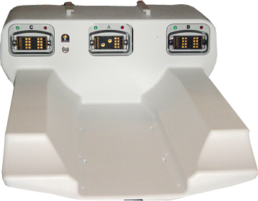
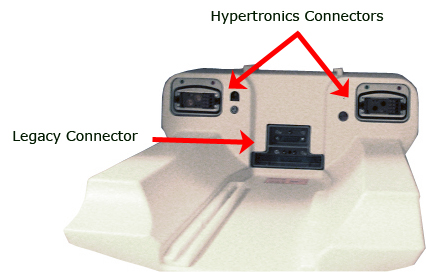
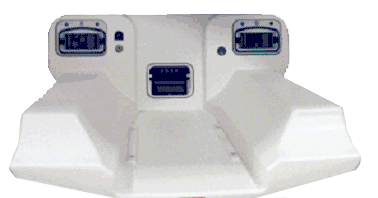

Proprietary to General Electric Company
Direction 5440000, Rev# 5
Signa HDxt Service Methods
Module Version 2.0, Version Date 6/18/09
Proprietary to General Electric Company |
There are different MCR tools available in the field, all of which are functional in at least some HDx configurations. The links below go to the procedures for each MCR tool. Make sure when servicing an MCR chain to use the correct tool for the scanner hardware configuration. If unsure of which procedure to use on the system, see the descriptions that follow.
For all new HDx systems, GE Healthcare ships LPCAs that have three similar ports (A, B, C). If the system was purchased as an HDx system, the LPCA should look like the one shown in Illustration 1, and requires the MCR 3 Tool.
Illustration 1: Floor Production HDx LPCA

| NOTE: | There are two MCR 3 Tools, one for 1.5T magnets and one for 3.0T magnets. |
See MCR 3 Tool for procedures detailing how to operate the tool.
See MCR 3 Chain Tool Troubleshooting for help troubleshooting MCR 3 issues.
Many non 32-channel systems that were upgraded to HDx retained their legacy LPCA. (See Illustration 2 or Illustration 3.)
Illustration 2: Legacy 1.5T LPCA

Illustration 3: Legacy 3.0T LPCA

Legacy LPCAs have Hypertronic connectors as well as a Legacy Connector. A Legacy LPCA requires both the MCR Tool and the MCR 2 Tool to test the entire receive chain. Differences between these two tools are:
The MCR Tool is used to test the Legacy connector, while the MCR 2 Tool is used to test Ports A and B.
The MCR Tool requires a baseline scan prior to using the diagnostic, while the MCR 2 Tool does not require a scan.
| NOTE: | There are two MCR 2 Tools and two MCR Tools, one each for 1.5T magnets and 3.0T magnets. |
To test each portion of the receive chain use the following tools:
MCR Tool: Tests the receive chain of coils that connect to Legacy connectors. (See Illustration 2 or Illustration 3.)
MCR 2 Tool: Tests the receive chain of coils that connect to Hypertronic connectors. (See Illustration 2 or Illustration 3.)
Each tool tests its portion of the receive chain back to the 16-channel Switch.